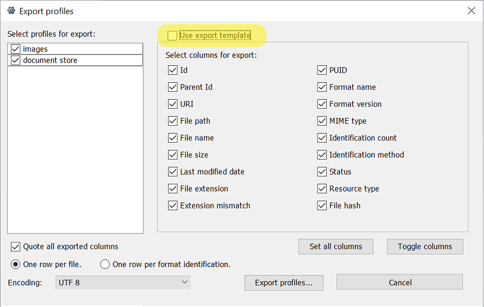
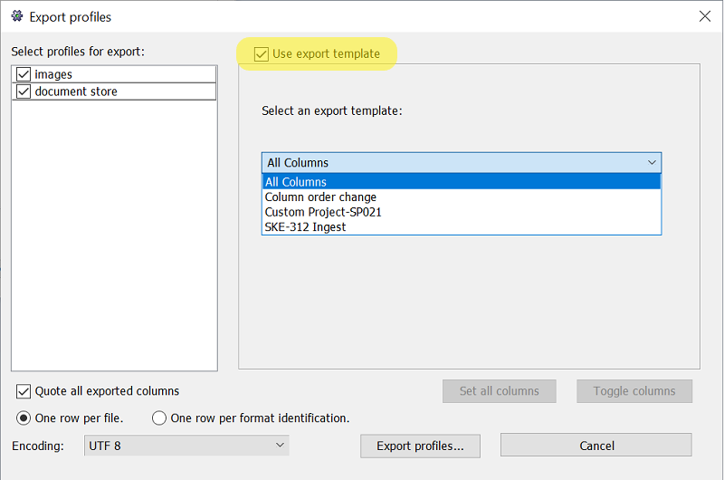

Export
Exporting a profile
DROID can export all open profiles (which are not currently running) to a CSV file. To
export a profile, press the Export button, or select the File / Export menu
item. This shows the export dialog. The profiles you have open are listed
in the export window. If a profile is empty, or in the process of running, it is greyed out.
Select all the profiles you want to export into a single CSV file by checking the boxes next to
them. If any of your profiles have active filters, then
the results will also be filtered. Each profile can have different filters defined and enabled.
There are two possible ways of exporting the profiles.
Selecting the columns for export
When the "Use export template" checkbox is unchecked, you are presented with an option to select one or more columns that you wish to export, as shown below:
CSV File Columns
The following table describes the columns which can be exported from DROID.
| Column Name | Description | Notes |
|---|---|---|
| ID | This is a unique number assigned to each file, folder or archival file processed by DROID. | |
| PARENT_ID | This is the id of the archival file or folder in which this file is contained. | |
| URI | Uniform Resource Identifier: This provides a standard, cross-platform way of describing where resources are located. URIs are described in more detail in Information collected by DROID | |
| FILE_PATH | The file system location of the resource being profiled. If the resource was directly in a file system. Some files are not on the file system - for example, files inside a zip file. In this case, the file paths are written relative to the parent file which exists on the file system. Such paths also include the type of archive as a prefix. | File paths are platform-dependent (they are different on Windows and unix). DROID will write out file paths for the system on which it is currently running. This means that if you profile files on a unix machine, then export the profiles on a Windows machine, the file paths will be written out as if they were Windows file paths, and vice versa. |
| NAME | The file name of the resource being profiled. | |
| METHOD | This field gives the method by which a resource identification has been made. |
Possible values:
|
| STATUS | This field gives the identification status of a resource. |
Possible values:
|
| SIZE | The size in bytes of a file. | Only files have a size, folders do not have a size. However, some files can contain other files inside them, for example zip files. In this case, the zip file has a size (as it is a file), and so do the files inside it. The size reported in all cases is the uncompressed size of each file, as it would appear if extracted from the container file. |
| TYPE | The type of the resource | DROID categorises the files and folders it profiles as being one of three types:
|
| EXT | The file extension of the resource | Extension is the last part of a filename following a full stop. Only files have extensions, as they indicate the type of the file. Even if a folder has a full stop in its name, it will not be assigned an extension. |
| LAST_MODIFIED | The date and time on which a resource was last modified. | |
| EXTENSION_MISMATCH | Whether there is a mismatch between the extension of the resource and its identification by signature |
Possible values:
|
| HASH | Hash is a fixed-size string of characters that is generated by running the contents of a file through a mathematical algorithm. DROID supports MD%, SHA1, SHA256 and SHA512 algorithms | If you have enabled hash generation in the preferences, then this column will contain the MD5, SHA1, SHA256 or SHA512 hash for each file and archival file processed. See "Detecting duplicate files" for more information on hashes. |
| FORMAT_COUNT | The number of identifications made to the resource. | |
| PUID | The PRONOM Unique Identifier of the resource, which identifies the format | The PRONOM Unique IDentifier (PUID) identifies the precise file format of a profiled file. When a resource has been identified, it is assigned a PUID. A unique identifier exists for every file format that DROID can recognise, and these identifiers are maintained in the PRONOM technical registry database, hosted at the UK National Archives. |
| MIME_TYPE | The mime type of the resource where known. | The mime-type of an identified file format is a high level format identifier assigned by the Internet Assigned Numbers. It is widely used in email and other internet protocols to identify the type of resource. Not all file formats identified by DROID have an assigned mime-type, and different PUIDs assigned by DROID can have the same mime-type |
| FORMAT_NAME | The name of an identified file format, as listed in the PRONOM technical registry against its PUID. | |
| FORMAT_VERSION | The version of an identified file format, as listed in the PRONOM technical registry against its PUID. Not all file formats have a defined version, so this field can be blank even when a file has a PUID. |
Export Templates
If you have configured any export templates for use with DROID, the "Use export template" checkbox is enabled. Checking this checkbox shows you a view to select one of the configured templates to be used for export as shown below:

An export template is a simple text file, with a .template extension, which defines customisations of
columns to be exported. Using a template, you can customise headers for the data columns, add new
columns to the export, convert the data in a column to be uppercase / lowercase and change the order
in which columns appear in the export. You can make an export template available to Droid by copying
it into the .droid6\export_templates folder. You can customise the columns listed in
the CSV Columns section.
Features
The current syntax for the export template is referred to as version 1.0. This version of the export template, when exporting the data, gives better control for the following
- Ordering the columns within the CSV as desired
- Changing the header of a column
- Adding columns with constant string values
- Converting the data from an underlying column to uppercase or lowercase
Syntax
Syntactically, the export template is simple to define. The details for defining various customisations are explained below.
-
Comment line: The export template allows for comments to be added in the file. Any line that
begins with
//is treated as a comment and it is ignored for column customisations. Please note, Droid only supports single line comments as of the current version -
Version line: The very first non-comment line of the Export Template defines the version
number. For now it simply needs to be
version 1.0 - Modifying a header: If you intend to use a different column header instead of one of the well-known column names used by Droid, you can do so by defining a line such as Identifier: $ID this instruction changes the header of the ID column to be "Identifier"
-
Adding a column: If you need to add a blank column to the export, it can be done by defining
it with a header without any data. e.g. If you want to add a column named "ProcessDate", but the
date is actually populated using some other method later in the workflow, you can define a line in
the template as
ProcessDate: - Adding a column and populating it with some value: If you need to add a column to the export and populate it with some value, it can be done by defining it with a header and the value in double quotes. e.g. If you want to add a column named "Submitter" and populate it with a value of "Librarian", you can define a line in the template as Submitter: "Librarian" Please note that the value is enclosed in double quotes.
-
Modifying a header and data: If you intend to use same or different column header and want to
modify the data that is populated from the profile results, you can do so by defining a modifier
line such as: Path: LCASE($FILE_PATH) This line will export the value of FILE_PATH in lowercase.
Please note: In version 1.0 the only supported modifications are conversion to uppercase or lowercase. Please also note that the LCASE or UCASE modifiers can only be used with the profile columns. These modifications are not supported on custom columns.
-
Order of the columns:
When using an Export Template, Droid exports only those columns which appear in the template and in the same order as they appear in the template. This gives you the control over ordering of columns in the export file.
Putting it all together
Consider the following template
// The following customisations are an example of how an export template can be used
// It defines a template version and customisations
//
// Created on: 21-SEP-2024
version 1.0
Identifier: $ID
Name: $NAME
LowerName: LCASE($NAME)
Language: "Simplified English"
Submitter: "Government Dept."
// Following column is added to the export but not populated
Background:
FormatName: $FORMAT_NAME
FormatVersion: $FORMAT_VERSION
Export Tool:
It indicates the following:
-
Initial few lines describe the template using comments
-
The version of the template is 1.0
-
The desired order of columns in the export file is: Identifier, Name, LowerName, Language, Submitter, Background, FormatName, FormatVersion, Export Tool
-
Identifier, Name, FormatName and FormatVersion columns are populated with data from the ID, NAME, FORMAT_NAME and FORMAT_VERSION column respectively
-
LowerName column is populated with the data from NAME column after converting it to lower case.
-
Language and Submitter columns are populated with the string values of "Simplified English" and "Government Dept." respectively
-
Background and Export Tool columns are left blank.
The potential output, depending on actual data, may appear as :
| Identifier | Name | LowerName | Language | Submitter | Background | FormatName | FormatVersion | Export Tool |
|---|---|---|---|---|---|---|---|---|
| 2 | GP-led-sites-may21.csv | gp-led-sites-may21.csv | Simplified English | Government Dept. | Comma Separated Values | |||
| 3 | Hospital-Hubs-may21.csv | hospital-hubs-may21.csv | Simplified English | Government Dept. | Comma Separated Values | |||
| 4 | Pharmacies-May21.csv | pharmacies-may21.csv | Simplified English | Government Dept. | Comma Separated Values | |||
| 5 | All-Sites.xlsx | all-sites.xlsx | Simplified English | Government Dept. | Microsoft Excel for Windows | 2007 onwards |
Other options
Once you have selected the columns to export or selected a template that you wish to use, you can also select other options such as whether the values should be enclosed in quotes when exporting. You can also select whether the export should produce one row per file, or one row per format. When exporting one row per file, each row in the CSV file will represent a single file, folder or archival file profiled with DROID. If exporting one row per format, each row in the CSV file will be a single format identification made by DROID. Since a file can be identified as being more than one possible format, this option will produce CSV files with multiple rows for the same file (but with different identifications for it).
The characters of the export will be encoded as UTF-8 by default. If you need to set this to the encoding used on your local machine instead, select 'Platform specific' instead.
When you are happy you want to export your profiles, press the Export profiles...
button. This will bring up a standard file-save dialog, in which you can specify where you want
your CSV file to be saved.
JSON output
By default, the export is a CSV file. You can instead select the JSON output button and DROID will save the export as a JSON file.
All of the standard filtering and template options work as they do with the CSV output.